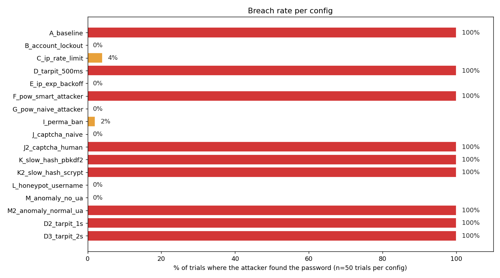
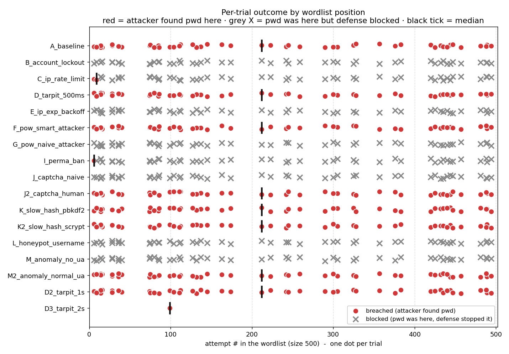
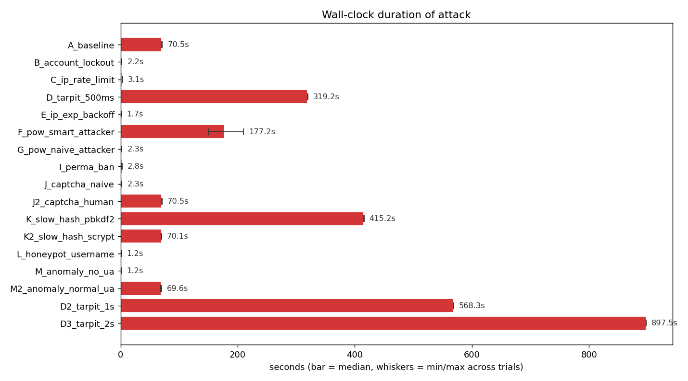
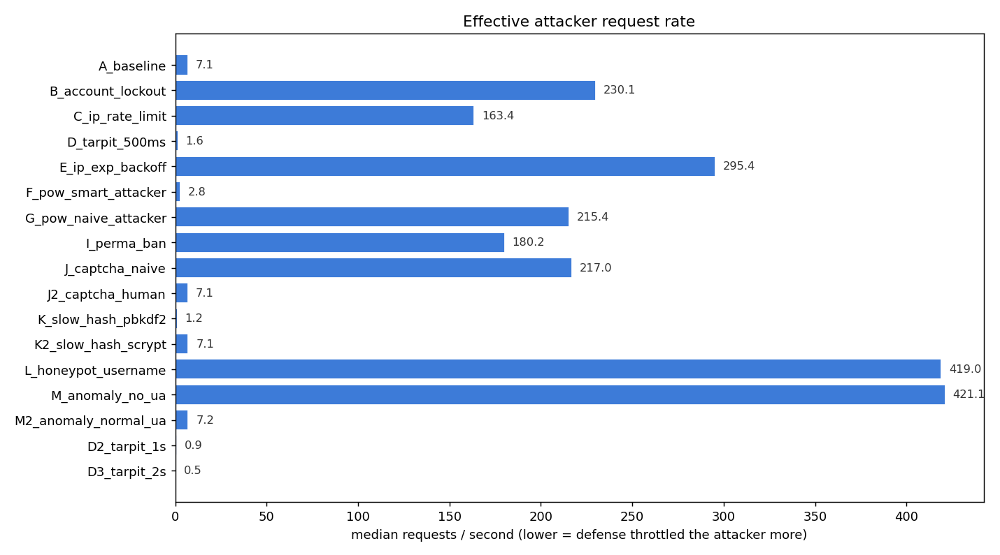
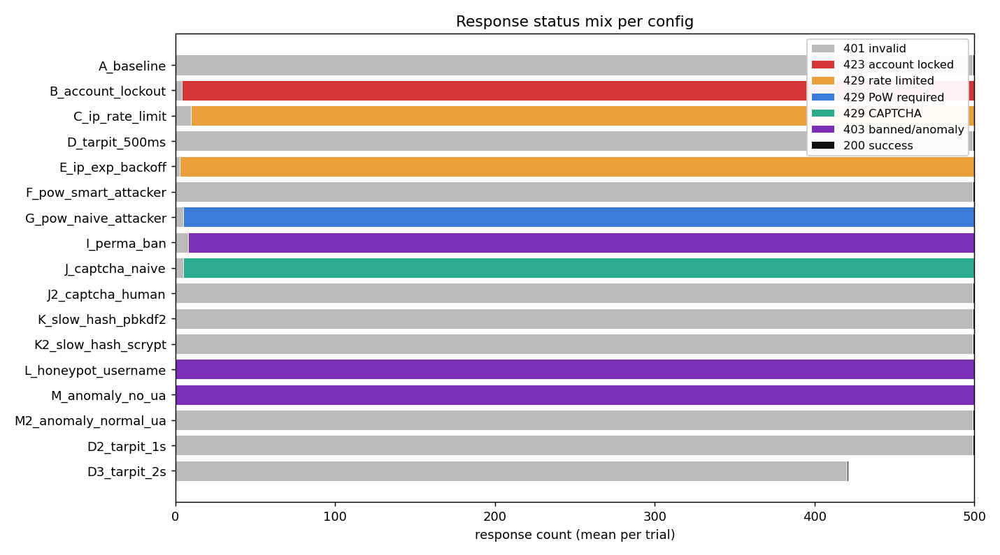
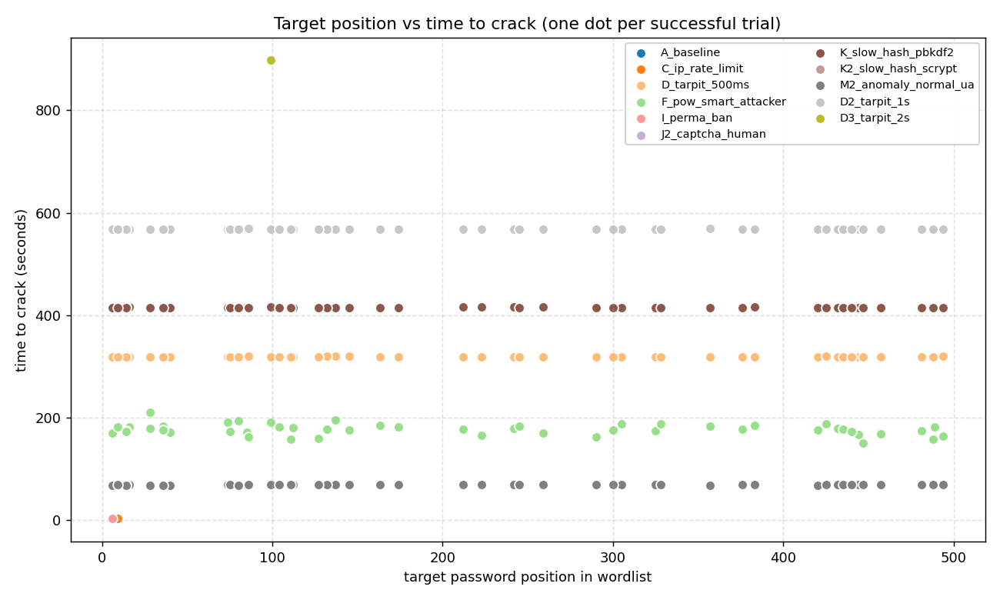

| config | category | description | verdict (% breached) | median elapsed | min..max | median req/s | median pos | trials |
|---|---|---|---|---|---|---|---|---|
| A_baseline | none | No protections - pure baseline | compromised (100%) | 70.47s | 69.5 .. 71.4 | 7.10 | 193 | 50 |
| B_account_lockout | single | Account lockout (5 fail -> 60s) | blocked (0%) | 2.17s | 1.8 .. 2.4 | 230.13 | - | 50 |
| C_ip_rate_limit | single | IP rate limit (10 / 30s) | partial (4%) | 3.06s | 2.6 .. 3.3 | 163.44 | 8 | 50 |
| D_tarpit_500ms | single | Tarpit 0.5s per failure | compromised (100%) | 319.24s | 318.8 .. 319.8 | 1.57 | 193 | 50 |
| E_ip_exp_backoff | single | IP exponential backoff (0.25s, cap 8s) | blocked (0%) | 1.69s | 1.5 .. 1.8 | 295.45 | - | 50 |
| F_pow_smart_attacker | single | PoW 18-bit after 5 fails (attacker solves) | compromised (100%) | 177.25s | 150.1 .. 210.0 | 2.82 | 193 | 50 |
| G_pow_naive_attacker | single | PoW 18-bit after 5 fails (naive attacker) | blocked (0%) | 2.32s | 1.9 .. 2.4 | 215.43 | - | 50 |
| I_perma_ban | single | Permanent IP ban after 8 fails / 1h | partial (2%) | 2.77s | 2.4 .. 3.0 | 180.15 | 6 | 50 |
| J_captcha_naive | single | CAPTCHA after 5 fails (naive attacker - no solver) | blocked (0%) | 2.30s | 1.8 .. 2.4 | 216.99 | - | 50 |
| J2_captcha_human | single | CAPTCHA after 5 fails (human-in-loop attacker solves) | compromised (100%) | 70.50s | 70.2 .. 70.7 | 7.09 | 193 | 50 |
| K_slow_hash_pbkdf2 | single | Slow password hash (pbkdf2:sha256:600000) | compromised (100%) | 415.25s | 414.4 .. 415.8 | 1.20 | 193 | 50 |
| K2_slow_hash_scrypt | single | Slow password hash (scrypt:32768:8:1) | compromised (100%) | 70.10s | 69.5 .. 70.3 | 7.13 | 193 | 50 |
| L_honeypot_username | single | Honeypot usernames (attacker hits 'admin') | blocked (0%) | 1.19s | 1.1 .. 1.4 | 419.00 | - | 50 |
| M_anomaly_no_ua | single | Anomaly detection (attacker omits User-Agent) | blocked (0%) | 1.19s | 1.1 .. 1.3 | 421.11 | - | 50 |
| M2_anomaly_normal_ua | single | Anomaly detection (attacker sends normal User-Agent) | compromised (100%) | 69.60s | 68.6 .. 70.0 | 7.18 | 193 | 50 |
| D2_tarpit_1s | variant | Tarpit 1s per failure | compromised (100%) | 568.27s | 567.9 .. 568.7 | 0.88 | 193 | 50 |
| D3_tarpit_2s | variant | Tarpit 2s per failure | compromised (100%) | 897.52s | 897.5 .. 897.5 | 0.47 | 99 | 1 |





